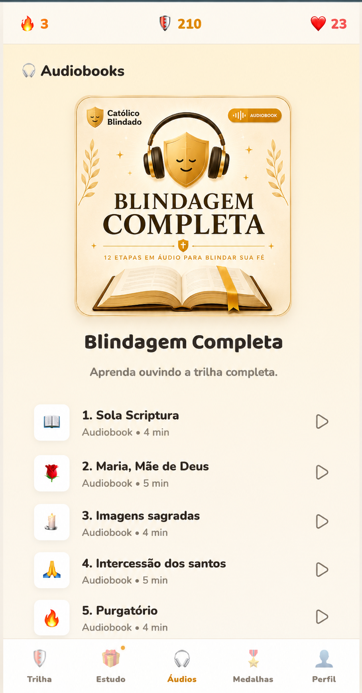
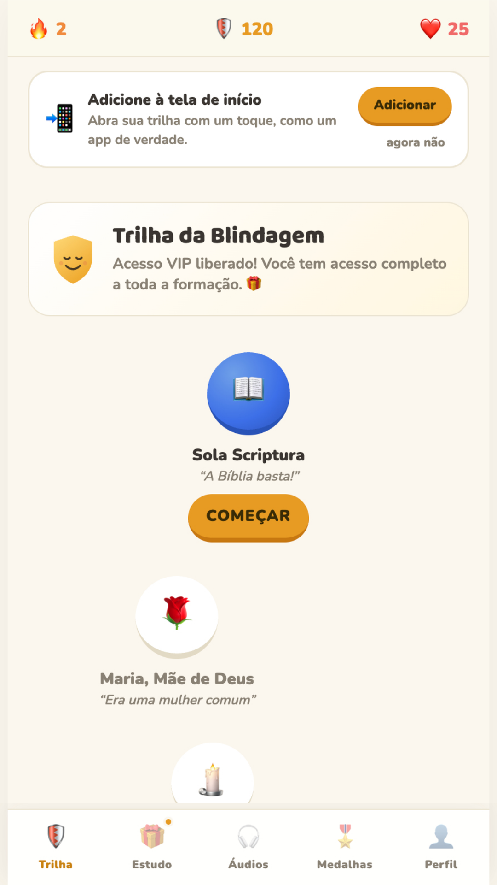

Veja por dentro

Tudo organizado, bonito e fácil de usar


Você abre, vê suas etapas em ordem e avança uma de cada vez. Cada etapa concluída é uma vitória a mais — e você sente o progresso acontecendo.